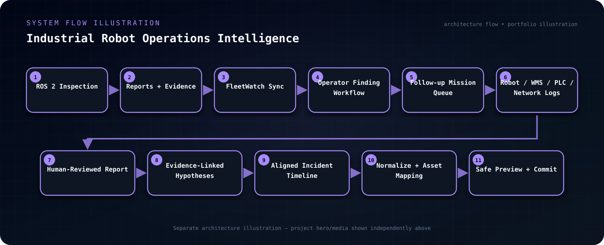

Integration Capstone · Public release Sep 2026
Industrial Robot Operations Intelligence
Integrated autonomous inspection, operator finding workflows and cross-system incident diagnostics into one auditable industrial robotics platform.
Engineering Challenge
A robot anomaly rarely lives in one log. Navigation and inspection evidence may need to be reconciled with fleet, WMS/WCS, PLC, network, charger, ticket and maintenance records before an operator can understand impact, recovery and likely causes.
Implementation
Integrated the autonomous inspection stack with a FleetWatch operator workflow and a separate historical incident-intelligence service. FleetWatch imports benchmark reports, campaign state and evidence into persistent site/asset/mission/finding records. The diagnostic service ingests CSV, JSON, JSONL, structured logs, ROS exports and other supported files through preview-before-commit flows, then normalizes events, aligns timelines, maps assets, calculates incident/recovery context, links hypotheses to evidence and generates reviewable reports.
System Architecture
Live path: ROS 2 inspection → reports / evidence / campaign state → FleetWatch sync → operator acknowledge / assign / reinspect / resolve / close → follow-up mission queue. Historical path: robot / WMS / WCS / PLC / network / maintenance exports → safe preview + commit → immutable source records → normalization + asset mapping → aligned timeline → incident metrics + evidence-linked hypotheses → human-reviewed reports.
System Flow Illustration
A separate visual map of the project architecture and data/control flow.

Validation & Test Strategy
The repository contains CI workflows plus contract, integration, end-to-end, browser, migration, fault-injection, parser-fuzz, property, performance, PostgreSQL, release and security tests. It also includes backup/restore tooling, migration history and release-gate checks. These are treated as validation surfaces in the portfolio, not as unsupported claims that every environment will pass unchanged.
Engineering Decisions & Boundaries
The diagnostic subsystem is intentionally read-only with respect to robots and industrial control systems. Source files retain SHA-256 provenance, ingestion uses a preview-before-commit boundary, hypotheses can carry supporting or contradicting evidence, and human review remains explicit instead of allowing the system to present unverified root-cause claims as facts.
Project Access
Public repository with implementation and documentation.
OPEN GITHUB REPOSITORY